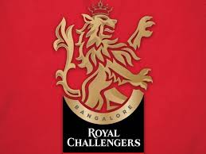
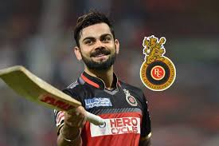

ROYAL CHALLENGERS BANGLORE

The Royal Challengers Bangalore (often abbreviated as RCB) are a franchise cricket team based in Bangalore,
Karnataka, that plays in the Indian Premier League (IPL). It was founded in 2008 by United Spirits and named
after the company's liquor brand Royal Challenge. Since its inception, the team has played its home matches at
the M. Chinnaswamy Stadium.
The Royal Challengers have never won the IPL but finished runners-up on three occasions between 2009 and 2016.
Their lack of success over the years despite the presence of various notable players has earned them the tag of
"underachievers." The team holds the records of both the highest and the lowest totals in the IPL – 263/5
and 49 respectively.
Ahead of the 2008 player auction, the IPL named Rahul Dravid as the icon player for the Bangalore franchise,
which meant that Dravid would be paid 15% more than the highest bid player at the auction. The franchise
acquired a number of Indian and international players at the auction such as Jacques Kallis, Anil Kumble, Zaheer
Khan, Mark Boucher, Dale Steyn and Cameron White. They also signed up Ross Taylor, Misbah-ul-Haq and India
under-19 World Cup winning captain Virat Kohli in the second round of auction. The team won only 4 of the 14
matches in the inaugural season, finishing seventh in the eight-team table. Only Dravid managed to score more
than 300 runs in the tournament and they had to even bench their costliest foreign player Kallis for a few of
the matches due to his poor form.[6][7] The string of failures midway through the season led to the sacking of
the CEO Charu Sharma, who was replaced with Brijesh Patel.[8] Team owner Vijay Mallya went on to publicly
criticize Dravid and Sharma for the players selected by them at the auction and stated that his "biggest mistake
was to abstain from the selection of the team."[8] Eventually the chief cricketing officer Martin Crowe
resigned.
CAPTAIN

Virat Kohli born 5 November 1988) is an Indian cricketer and the
current captain of the India national team. A right-handed top-order batsman, Kohli is regarded as one of the
best batsmen in the world. He plays for Royal Challengers Bangalore in the Indian Premier League (IPL), and
has been the team's captain since 2013. Since October 2017, he has been the top-ranked ODI batsman in the world
and is currently 2nd in Test rankings with 886 points. Among Indian batsmen, Kohli has the best ever Test
rating (937 points), ODI rating (911 points) and T20I rating (897 points).
Kohli captained India Under-19s to victory at the 2008 Under-19 World Cup in Malaysia. After a few months later,
he made his ODI debut for India against Sri Lanka at the age of 19. Initially having played as a reserve batsman
in the Indian team, he soon established himself as a regular in the ODI middle-order and was part of the squad
that won the 2011 World Cup. He made his Test debut in 2011 and shrugged off the tag of "ODI specialist" by 2013
with Test hundreds in Australia and South Africa. Having reached the number one spot in the ICC rankings for
ODI batsmen for the first time in 2013, Kohli also found success in the Twenty20 format, winning the Man of
the Tournament twice at the ICC World Twenty20 (in 2014 and 2016).